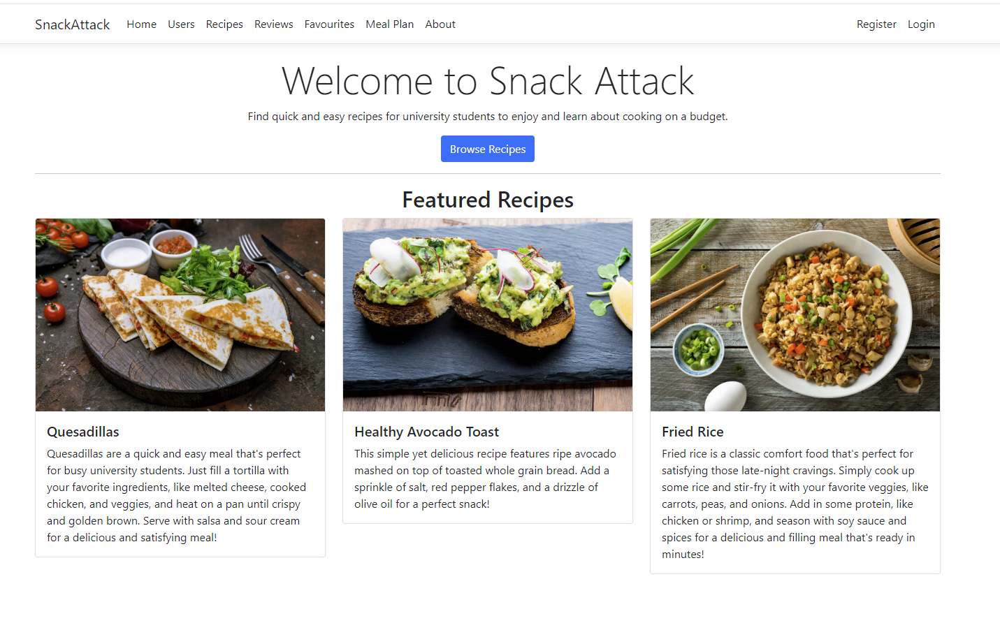
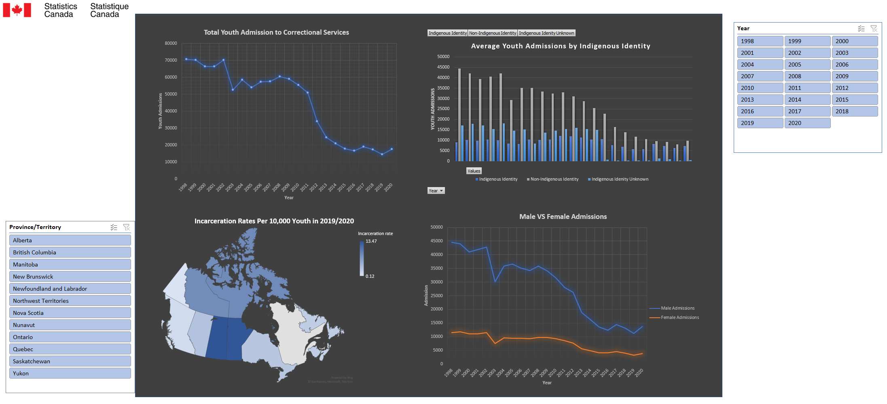

Built various machine learning models using Python including KNN, Decision Trees, Regression, Random Forests, Clustering

Some algorithms created include:
- Amazon Recommendation Model: Developed using a subset of Amazon Reviews for musical instruments, this model employs K-nearest neighbours (KNN) to not only forecast the rating a new user might assign to a musical instrument but also to suggest products to users without prior purchase history.
- House Pricing Prediction: Leveraged KNN and Decision Tree Classifier in creating two distinct models aimed at predicting the town of a residence based on various factors such as sale price and date, number of bedrooms and bathrooms, square footage of the house and lot, type of house, and construction year.
- K-means Clustering and Data Normalization: This project involved the development of a K-means clustering model, where various cluster counts were evaluated to identify the optimal model through silhouette score analysis, assessing the data point coherence within clusters versus other clusters.
- YVR Taxi Demand Prediction: Analyzed Vancouver International Airport (YVR) data, including temperature, rideshare usage, and passenger arrivals by airline, to predict taxi demand. Utilized Regression, Decision Trees, and Grid Search with Cross Validation, focusing on accurately forecasting taxi requirements at specific times of the day.

This is an interactive dashboard utilizing PowerBI and PowerQuery
This project analyzed annual healthcare spending in Canada, using Power Query in Excel for data processing and PowerBI for visualization.
It focused on trends in healthcare spending by age group, province/territory, government versus individual expenditures on healthcare, and compared these findings to Canadian income tax brackets.
The data for this analysis were sourced from Statistics Canada and the Canadian Institute for Health Information, providing a detailed view of healthcare spending patterns across the country.
The project aimed to provide an interactive dashboard that displays clear insights into how healthcare funds are distributed and the financial impact on various groups and regions throughout Canada.

This project utilized C# and HTML
SnackAttack is a web application designed to assist university students in making healthy and affordable food choices. Recognizing the challenges students face due to busy schedules and limited budgets, which often hinder maintaining a nutritious diet, SnackAttack offers a solution. The application facilitates access to recipes that are both healthful and economical, utilizing ingredients that are readily available at local grocery stores.
This web application also encourages a collaborative environment, as it empowers any student to input their own recipes, creating a shared space where students can discover and try recipes contributed by their peers. This feature enhances the community aspect of SnackAttack, allowing students to exchange their favorite meal ideas, learn from each other, and broaden their culinary horizons with dishes that are both nutritious and wallet-friendly.

This interactive dashboard, leverages comprehensive data from Statistics Canada spanning from 1998 to 2020, offering an in-depth analysis of youth incarceration rates across the country. It provides a detailed comparison of male versus female admissions to the criminal justice system, alongside an exploration of provincial disparities to identify which regions report the highest rates of incarceration. A significant focus of the dashboard is on the representation of Indigenous youth within the incarceration system, highlighting the percentage of Indigenous youth incarcerated in Canada. Additionally, it presents a trend analysis of youth incarcerations over the years, offering valuable insights into the evolving landscape of youth justice.
This dashboard serves as a critical tool for understanding the dynamics of youth incarceration, facilitating informed discussions and policy-making aimed at addressing systemic issues within Canada's justice system.